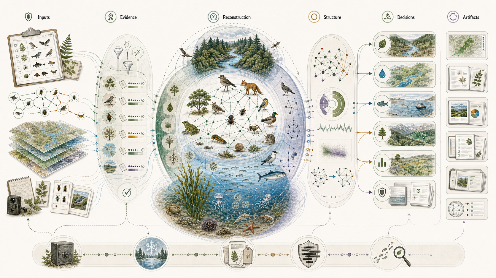
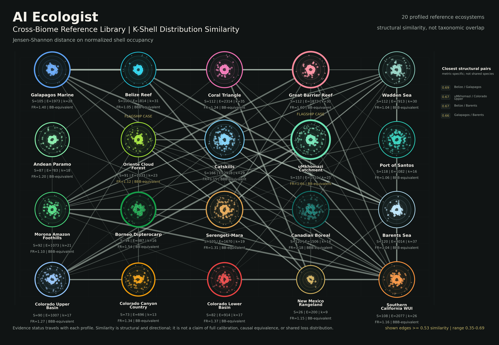
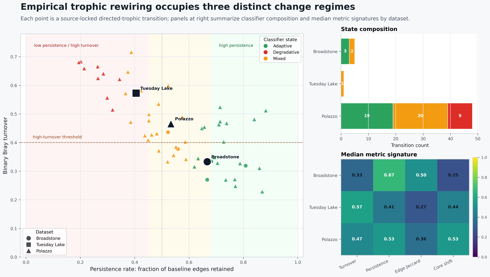

AI Ecologist: transforming species inventories into structural ecological intelligence.
For the institutions that finance, insure, and underwrite nature.
What it is. AI Ecologist is a multi-layered engine that reconstructs an ecosystem's interaction network from a species inventory, with no time series required, measures where that network is structurally fragile, and routes the result into domain decision-instruments (restoration, watershed, conservation, fisheries, and nature-finance) under an explicit evidence-tier discipline. In one line, it aims to become the catastrophe model for nature, the vulnerability layer beneath hazard and exposure.

Inventories everywhere. Decisions nowhere.
We are drowning in data but starved for actionable decisions. Operators now collect species inventories, including environmental DNA, camera traps, and bioacoustics, at unprecedented scale. Yet this wealth of data is under-used, read only through conventional metrics such as richness, diversity, or occurrence maps. These metrics map what is present, but they are structurally blind to what is load-bearing, where the system will fail first, and which intervention would buy the most resilience per dollar.
An ecosystem is organised as a complex network of interactions, not a flat inventory, and its resilience depends entirely on how the species are wired together. Network ecology confirms this. Robustness or collapse is largely dictated by the web's topology, with a handful of highly connected species acting as linchpins. Lose them, and the collapse cascades. Traditional compositional metrics are blind to this web, so they can report a system on the brink as perfectly healthy.
And when the web fails, the cost does not stay in the ecosystem. It lands on a balance sheet, as a water utility's treatment bill, an insurer's payout, a lender's impairment, a sourcing-dependent company's shortfall.
The blind spot. Risk lives in how the pieces are connected, not in how many pieces you can count.
From counting to diagnosing.
| Conventional inventory analysis | AI Ecologist |
|---|---|
| Counts, richness, diversity indices | The interaction network behind the inventory |
| Maps what is present | Finds what is structurally load-bearing |
| Describes the current condition | Pinpoints where the system fails first |
| Generic, one-size recommendations | Routes to a specific decision and domain instrument |
| A static snapshot | Tracks how the network rewires over time |
The command layer, the decision bridge. We do not just calculate interactions, we translate them. By tying what the network does to the signals a specific sector already tracks, such as watershed recharge pressure or nature-finance risk grades, we turn complex data into audit-ready pathways for restoration and capital allocation.
Three moves: reconstruct, locate, route.
More than a model with a prompt. Reading an ecosystem is not a text problem. The engine is multilayered. Machine reasoning is one bounded step, checked against ecological evidence and the shape of the network itself, and the reconstruction is benchmarked against known food webs rather than asserted. It stands on decades of food-web ecology and network science, from how a web's core holds together to how failures cascade through it. The decision layer is deterministic, owned, and reproducible, and no external model makes the call. The defensible work is not generating language. It is reconstructing a coherent ecological network and reading its structure under an explicit evidence discipline.
A hidden keystone. In a cloud-forest basin that feeds the drinking water of a city of millions, AI Ecologist found that the apex predators are not in the load-bearing core. Fourteen nectar-feeders sit deeper than the puma, eleven of them hummingbirds, and the species with the highest structural impact of all are the soil's recyclers, a dung beetle and the leaf-cutter ants. On a conventional species list, the pollinators and the recyclers are line items among hundreds. The engine reads the canopy, and the watershed it stabilises, as resting on them.
Scope and honesty. The reconstruction and structural-risk layer is benchmarked and reproducible. Economic and financial outputs are prototype, screening-grade, and not market-calibrated. AI Ecologist is a targeting and risk-screening layer, not a field census or a calibrated forecast.
One reconstruction, many decisions.
Restoration
What to restore first, where each action buys the most resilience.
Watershed
Secure water through network-prioritised restoration of the catchment.
Conservation
Protect the load-bearing species, not only the charismatic few.
Fisheries
Find the structural linchpins of marine and freshwater food webs.
Nature-finance
Structural inputs for disclosure screening, prototype and screening-grade.
Evidence-tier discipline
Every claim labeled computed, indicative, or hypothesis. No hidden confidence.
The vulnerability layer is the open gap.
- The rules are turning into spending. Nature-related disclosure adoption has passed 730 organisations representing about $22.4 trillion in assets under management, and a nature-disclosure exposure draft is targeted for late 2026. Disclosure becomes obligation, and obligation becomes budget. (Figures are third-party market and regulatory facts, current at the snapshot date.)
- Finance and insurance need more than dependency screens. They need to know where and why an ecosystem fails before it does, in language a risk committee can act on.
- The vulnerability layer is the open gap. Hazard and exposure tools are mature. The causal layer beneath them, where fragility and cascade live, is owned by no one yet.
- Operators are data-rich and decision-poor. As AI agents enter the workflow, they need machine-readable structural intelligence, not raw species lists.
Where AI Ecologist sits.
| Capability | Disclosure & data platforms | Remote sensing / GIS | Academic methods | AI Ecologist |
|---|---|---|---|---|
| Geospatial footprint | ✓ | ✓ | · | ✓ |
| Species-level data | ✓ | partial | · | ✓ |
| Reconstructs the interaction network from an inventory | · | · | partial | ✓ |
| Pinpoints structural fragility and keystones | · | · | · | ✓ |
| Simulates failure and cascade | · | · | · | ✓ |
| Routes to a domain decision-instrument | partial | · | · | ✓ |
| Human and AI-agent outputs | · | · | · | ✓ |
| Change-over-time intelligence | partial | partial | · | ✓ |
| Evidence-tier discipline, disclosure aligned | partial | partial | · | ✓ |
The position. AI Ecologist is the missing intelligence layer on top of the inventories operators already hold. The decision logic is owned, auditable, and reproducible, not a black box rented from a third party.
A network you can interrogate, not just count.
Stop counting. Start diagnosing. By processing a species inventory, AI Ecologist reconstructs the functional interaction network that governs an ecosystem. The figure below sorts the species into nested layers by how deeply connected each one is, one of the engine's main outputs. It turns a static list of names into a diagnostic map, revealing the load-bearing architecture that holds the system together, the bottlenecks where risk concentrates, and the dependencies that determine resilience.

How to read it. A large, tightly wound core signals redundancy and resilience. A species sitting unexpectedly deep is a hidden keystone. The thin outer shells are where collapse begins.
Cross-biome structural benchmarking.
A single reconstruction gives an ecosystem diagnostic. A collection gives a comparative reference frame. AI Ecologist profiles structural fingerprints across a growing library of reference ecosystems, currently twenty across six continents, from coral reefs and tidal flats to boreal systems and temperate watersheds. This benchmarking enables a standardised way to quantify network architecture, so a new inventory can be evaluated against established patterns of organisation and resilience.

Why it matters. This turns isolated site data into scalable, comparative intelligence. By placing a new inventory against this reference set, operators can find structurally similar systems and anticipate where instability is likely to concentrate, based on patterns seen across ecosystems worldwide.
The system is changing shape.
A static inventory captures one ephemeral state. The more critical question is the trajectory, whether an ecosystem's dependency architecture is holding its resilience or suffering insidious degradation. The rewiring module compares network states over time, measuring which interaction patterns hold, how the central group of species reorganises, and which dependencies are gained or lost and in which direction. It is an observational instrument for monitoring systemic transitions, an evidence-based way to evaluate change rather than to speculate about it.

Validated, and bounded. On a published record of a network changing over time, the engine reproduced the overall change signal almost exactly across 658 time windows, then confirmed the result across three independent food-web datasets. It quantifies network change. It does not claim to forecast it.
Independently validated to generalize.
A reconstruction engine earns trust only on ecosystems it was never tuned on. AI Ecologist was put through a large-corpus generalization benchmark on 254 independent ecological networks drawn from three separate scientific databases, and it answered the two questions a reviewer asks first.
It recovers what was hidden
With a fifth of the interactions removed from each of the 254 networks, the engine recovered the hidden links far above the chance baseline measured from the data itself, and every one of the 254 checks was run leak-free. The pre-registered verdict was confirmed across the corpus.
It transfers to the unseen
Trained on one set of ecosystems and tested on whole biomes and geographies it had never encountered, the engine carried its skill across, positive in every adequately sampled group. The pre-registered verdict was supported.
The rigor is the point. Both results were designed under a multidisciplinary review that found and removed a subtle data leak before any claim was made, then were checked by an independent adversarial pass whose only task was to break them. Every magnitude is read against a null measured from the data, not assumed, and the whole pipeline reproduces from tracked records.
Stated at its boundary. These are strong diagnostics on an open corpus, not a sealed proof, and the pre-registered bar for a sealed external claim is deliberately still unmet. A degree-preserving control attributes about half of the cross-ecosystem transfer to simple connectivity and about half to genuine higher-order structure, which is the honest reading, not the headline alone. The structural engine is benchmarked and reproducible. The financial layer stays a screening prototype. We publish the limit as plainly as the result.
Two ways in.
Pilot scan
One site, one decision question. From inventory to structural fragility and decision priorities in days, with expert oversight. A fixed-scope entry point.
Monitoring
Recurring structural intelligence and change-tracking across a portfolio of sites.
Managed access
Structured inputs in, evidence packs out, through a controlled interface you query. Scale to hundreds of sites without ever exposing the engine.
Partnership / investment
Back the vulnerability layer beneath the nature-intelligence stack.
Built by Jay Gutierrez, PhD. Working at the intersection of ecological network science, AI and graph intelligence, nature-finance translation, and publishing the work that is defining the structural-risk category.
Stop counting. Start diagnosing.
Two ways in: send one species list and a site boundary for a fixed-scope pilot, or talk to us about backing the layer.
AI Ecologist, a structural ecological intelligence engine. Snapshot 2026-06-29. Structural reconstruction and fragility are benchmarked and reproducible; financial outputs are prototype, screening-grade, and not market-calibrated. Third-party market and regulatory figures are cited from public sources and should be re-verified at the time of reading.